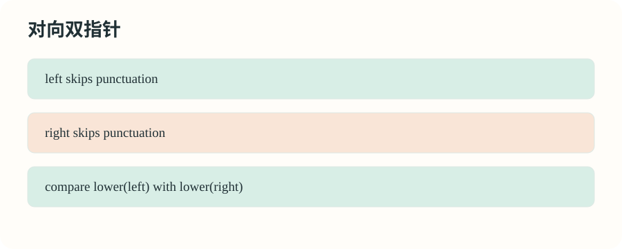
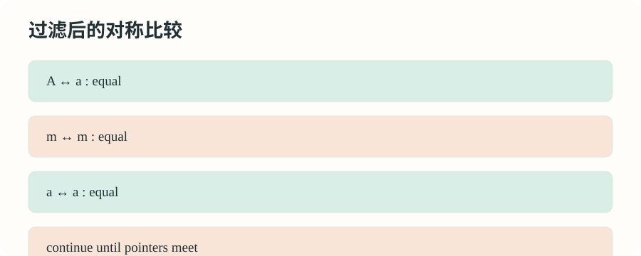
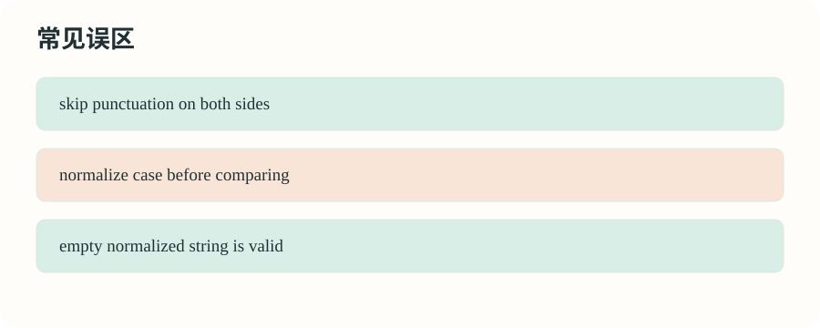

LEETCODE 125 / EASY / TWO POINTERS
验证回文串
Valid Palindrome · 先忽略所有非字母数字字符，再把大写字母视为小写，判断处理后的序列正向和反向是否相同。A man, a plan, a canal: Panama 过滤后为 amanaplanacanalpanama，因此返回 True。
01 · 为什么使用双指针
朴素方法先构造过滤后的小写字符串，再与反转字符串比较，时间 O(n)，额外空间 O(n)。回文的定义本身是首尾对称，因此可以直接从原字符串两端比较，跳过无关字符，不必构造副本。
02 · 状态与不变量
left 与 right 之间是尚未验证的区间；区间外所有有效字符对已经成对相等。遇到标点或空格就跳过；两端都是字母数字时，统一大小写后比较。任意一对不等即可提前返回 False。

03 · 关键步骤交互

步骤 1 / 4
初始化
left 指向 A，right 指向 a。
两端之间是尚未验证的字符区间。
当前第 1 步
04 · 正确性证明
过滤后字符串的有效字符顺序与原字符串中的有效字符顺序一致。双指针依次比较过滤后序列的首尾字符对，恰好覆盖所有关于中心对称的字符。若有一对不相等则不是回文；若全部相等，中心最多剩一个字符，序列即为回文。
05 · Python 实现
class Solution:
def isPalindrome(self, s: str) -> bool:
left, right = 0, len(s) - 1
while left < right:
while left < right and not s[left].isalnum():
left += 1
while left < right and not s[right].isalnum():
right -= 1
if s[left].lower() != s[right].lower():
return False
left += 1
right -= 1
return True时间 O(n)，两个指针只向内移动；辅助空间 O(1)，没有创建过滤字符串。题目约束是可打印 ASCII；若要严格限制 ASCII，可把 isalnum 换成显式字符区间判断。
06 · 易错点与边界
必须先跳过两侧无效字符，再比较；比较前统一大小写。空格或全标点过滤后为空串，按定义是回文。不要在比较后漏掉双指针的同步内移。
